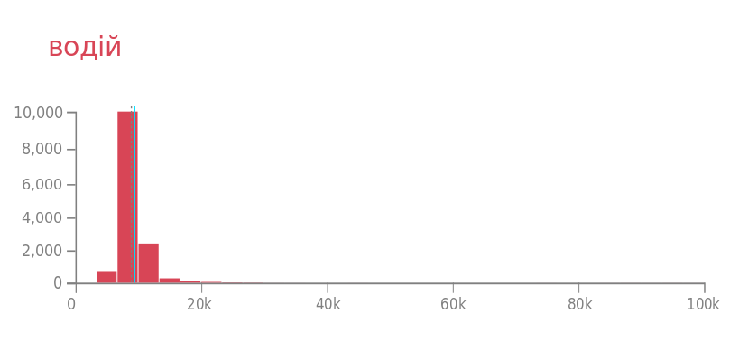

База декларацій, яку заповнюють чиновники та інші посадовці — неймовірно велика. У 2016 році до НАЗК (орган,
що відповідає за збір та аналіз декларацій) було подано 1 млн 120 тис. декларацій, у
2017 — 813 тис. декларацій. У 2018 ця цифра склала ~ 1 млн 300 тис. декларацій*. Це майже 10% від усіх, хто в Україні працює офіційно. З одного боку, це нонсенс
— змушувати таку кількість людей дуже детально розповідати про своє майно та дохід, а з іншого — це чудова
нагода дослідити реальний рівень зарплат в країні. Саме це ми й зробили: викачали близько 1 млн щорічних
декларацій за 2018 рік та з’ясували, яким є рівень зарплат у різних професіях.
Над проектом працювали: Євгенія ДРОЗДОВА, Надя КЕЛЬМ.
Над проектом працювали:
Євгенія ДРОЗДОВА, Надя КЕЛЬМ.
Оновлено: 16.07.2019 р.
У цій базі є чимало робітничих професій. Наприклад, майже 14 тисяч водіїв, близько 3 тисяч «помічників
чергового», під 350 слюсарів тощо. А ще є судді, ректори та багато інших.
Загалом дані декларацій за 2018 рік свідчать про те, що середня зарплата в багатьох професіях у держсекторі
не нижча, ніж середня зарплата по країні, яка торік становила понад 8 тис. грн. Середня зарплата в
проаналізованих нами деклараціях вища — 13 тис. 350 грн. Така різниця повʼязана з тим, що велика частина
декларантів — це люди на керівних посадах (начальники, керівники, головні бухгалтери, директори тощо).
Найменша середня зарплата в професії у соціальних працівників: 5067 грн на місяць. Найвища — у суддів,
менеджерів і управителів з Нацбанку та Пенсійного фонду, детективів НАБУ тощо.
Великий розкид в зарплатах — у міських голів. Найбідніший з них офіційно отримує менше 10 тис. грн (міський
голова невказаної міської ради), найбагатший — понад 100 тис. грн (Тернівська міська рада Дніпропетровської
області).
Цікаво, що середня зарплата водіїв, які заповнюють декларації — 8 тисяч, а середня по ринку за цю роботу — 12
тисяч гривень.
Ми прогнали професії через класифікатор, потім виокремили найбільш популярні серед тих, які нам вдалося
класифікувати, і подивились на розподіл зарплат. Для зручності загальну суму задекларованої за рік зарплати
ми поділили на 12 місяців. Знайдені професії ми розділили на умовні сфери, аби було легше орієнтуватися в
їхньому переліку.
Ви можете додавати різні професії — і співставляти суми, якими вони оплачуються.
Як подивитися зарплати?
Щоб подивитися на зарплату певної категорії, у віконечку праворуч виберіть професію і натисніть +.
Ви можете додавати стільки графіків, скільки забажаєте. Кожен новий графік з’являтиметься першим. Щоб закрити
якийсь графік, просто клікніть на нього.
Як читати графіку?
Для прикладу візьмемо директорів (див. графік нижче). Ми бачимо, що середня зарплата в професії серед
декларантів (синя лінія) майже вдвічі вища за середню по країні станом на 2018 рік за даними Мінфіну (сіра
пунктирна лінія на графіку). По осі Y (вертикальна лінія) — кількість директорів, які подавали декларації.
Перший стовпчик показує кількість директорів, які отримують найменшу зарплату серед своїх колег. Але більша
частина директорів (найвищі стовпчики) припадає на проміжок до 20 тис. грн. Водночас, деякі директори
заробляють до 100 тис. грн на місяць, але, як ви можете побачити, їх небагато — це останній стовпчик.
Зверніть увагу, що в деклараціях вказано суму заробітної плати до вирахування ПДФО (18%) та війського збору (1.5%). Тобто на руки людина отримує менше - 80.5% від зазначеної суми.
У водіїв картинка буде відрізнятись (див. графік нижче). Зарплати водіїв також стартують із
мінімальної, однак середня зарплата майже дорівнює середній по країні, й саме стільки заробляє абсолютна
більшість водіїв серед тих, хто подав декларацію. Трохи більше 20 тис. грн — максимальний поріг для цієї
професії.

Клікайте на «плюс» біля назви професій, щоб додати графік. Щоб прибрати
графік, клікніть на графік. Чим вищі стовпчики, тим більш розповсюджена професія. Чим далі стовпчики від 0,
тим вища зарплата.
За замовчуванням усі графіки, які ви бачите на екрані, мають однакову шкалу Y (вертикальну лінію). Таким
чином видно, наскільки популярна та чи інша професія серед декларантів. Що більша кількість декларацій,
то вища репрезентативність. Наприклад, графік «водіїв» містить дані понад 10 тис. декларацій, в той час
графік для професії «ординатор» — лише близько 500. Це означає, що треба обережніше узагальнювати наявні
дані на всіх представників професії. Якщо вас цікавлять тільки зарплати, ви можете активізувати власну
шкалу для кожного графіка — кнопка «Єдина Y-шкала».
Сіра пунктирна лінія — середня зарплата по країні за
2018 рік (дані мінфін). Блакитна— середня зарплата
в професії за наявними деклараціями.
Чому серед декларантів є робітники?
Мабуть, вас зацікавило, чому в деклараціях, які мають заповнювати чиновники, є й робітничі професії.
Закон «Про запобігання корупції» змушує щорічно подавати декларації тих, хто, говорячи бюрократичною мовою,
уповноважений на виконання функцій держави або місцевого самоврядування, а також прирівняних до них
посадових осіб. Повний перелік цих осіб визначений п.1 ст. 3 зазначеного Закону.
Юридичний радник Transparency International Олександр Калітенко пояснює, що водій, який отримує бензин
і розписується за нього, майстер колії, який перевіряє якість залізничних шляхів — всі вони наділені
організаційно-розпорядчими чи адміністративно-господарськими функціями. А отже, відповідно до положень
Закону, мусять заповнювати декларації.
Розмови про необхідність скоротити перелік осіб, що мають декларувати доходи, точаться відтоді, як цей Закон
був ухвалений. Це не дивно, бо збір державою детальної інформації про понад 1 млн людей нагадує орвелівську
антиутопію.
На думку Калітенка, важливо виробити єдиний підхід, адже, оптимізуючи перелік посад декларантів, слід
зберегти у ньому ті посади, які справді несуть високі корупційні ризики.
Так, наприклад, у 2017 році з декларування вже випали декани та завідувачі кафедр, але водії та слюсарі
залишилися. Логічно було б зробити навпаки.
Детальніше про методологію
З декларацій за 2018 рік ми витягли інформацію стосовно заробітної плати декларантів. Після цього ми
класифікували вказані в деклараціях професії там, де це було можливо. Не всюди, оскільки поля з назвою
професій і місцем роботи декларанти заповнюють вручну. Відповідно, там чимало помилок і хибодруків,
варіативність яких зашкалює. Часом назви професій скорочені до малозрозумілих абревіатур.
Деякі з них нам вдалося розшифрувати. Наприклад:
«СДРІ» /«ГДРІ» — старший/головний державний ревізор-інспектор;
«СРПП» — сектор реагування патрульної поліції;
«о/у» — оперуповноважений;
«ЧПНУ» — черговий помічник начальника установи.
Втім, це вдалося далеко не в усіх випадках. Скорочення, які використовує багато декларантів, розшифрувати
легше, ніж поодинокі. Які професії ховаються під абревіатурами «ЗКД з МПЗ», «СЛ та МТЗ ВП», «ШЧУ» — ми так і
не змогли встановити.
В деякі галузі, зокрема, такі як освіта або судова система, ми додали професії, за якими декларацій було
небагато, але вони можуть бути цікавими для ширшого розуміння ситуації в цій сфері. Наприклад, ректори,
проректори, професори та вихователі, голови суду, заступники голів суду тощо.
Зважаючи на те, що в деклараціях немає позначок щодо розміру ставки (1, 0.5 тощо), ми прибрали всі випадки,
де річна зарплата становить менше від мінімальної зарплати за рік. Також в деклараціях немає вказівки щодо того, чи людина повний рік пропрацювала на посаді, чи ні.
Декларант вказує лише загальну суму станом на закінчення року. Отже, якась частина малих зарплат в професії - може означати лише те, що людина відпрацювала лише кілька
місяців. Тож не варто сприймати ці цифри як абсолютні - вони скоріше показують загальні тенденції.
Верхню межу вказаних зарплат ми обмежили сумою 100 тис. грн / місяць. Звісно, в держсекторі є й більші
зарплати. Деякі судді, ректори, директори, менеджери й управителі великих компаній, головні інженери мають
надзвичайно високі зарплати. Дехто вказує багатомільярдні зарплати, яких в держсекторі немає, деякі цифри
більше схожі на паролі від електронної пошти, ніж на суму зарплат. Однак такі випадки є поодинокими для
різних професій і не мають суттєвого впливу на розподіл. Більшість декларантів отримує зарплату в межах
10-50 тис. грн на місяць.
*Запит стосовно кількості декларацій, що НАЗК отримало за 2018 рік, ми направили 10 червня. На час виходу матеріалу відповіді від НАЗК ще було. 15 липня ми отримали відповідь, в якій зазначалось, що у 2018 році НАЗК отримало 1 млн 301 тис. 181 декларацію, з яких 944.2 тис. щорічних, 110.5 тис. перед/після звільнення, 172.6 тис. від кандидатів на посаду, 73.9 — про суттєві зміни в майновому стані.